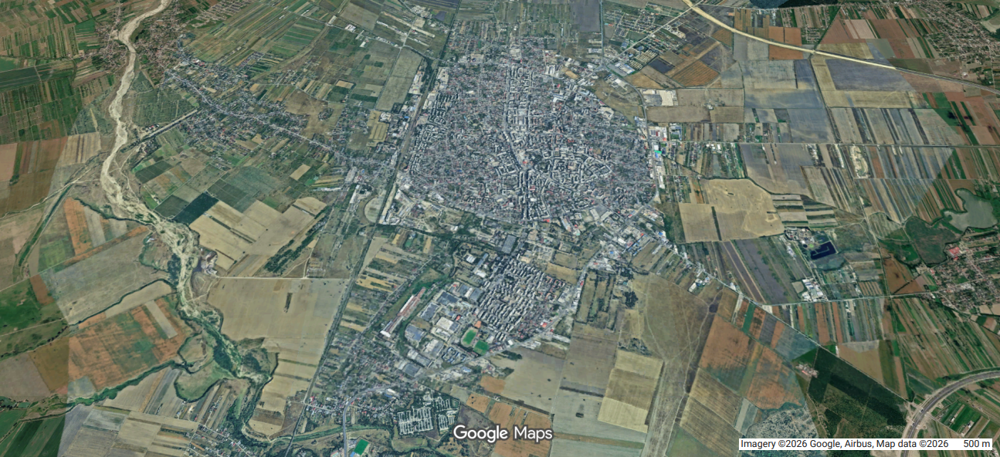
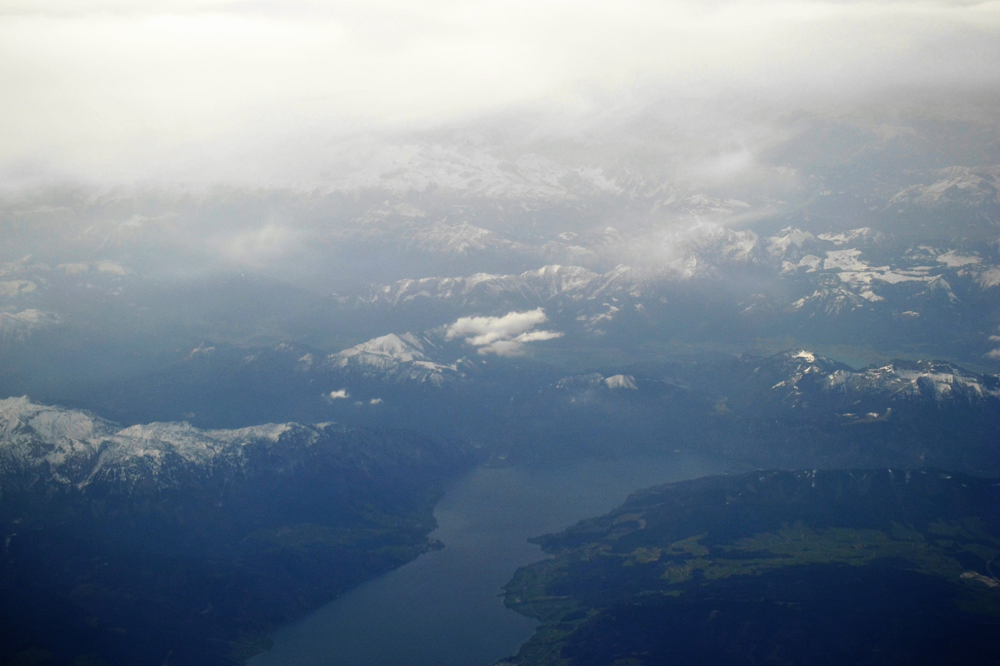
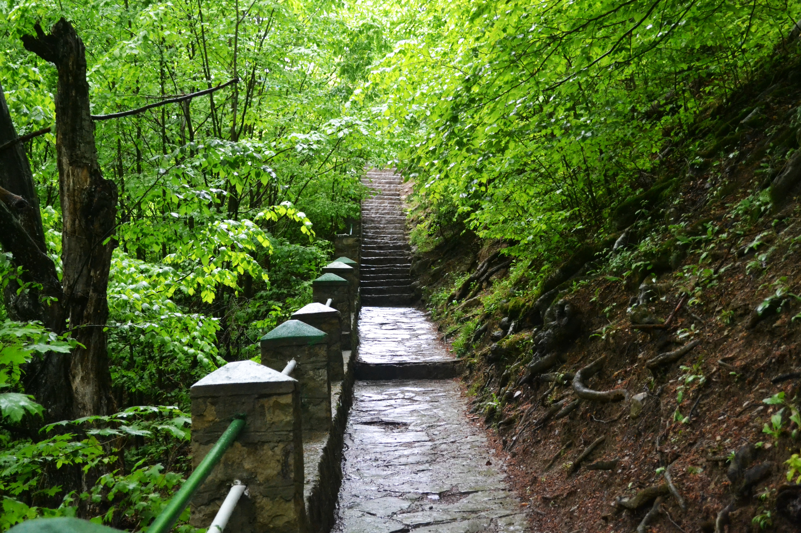

Ko Phi Phi Shoreline Analysis
Google Earth Engine workflow for shoreline extraction and multi-temporal change detection.
Explore →
Focșani Green Infrastructure
Urban environmental analysis using NDVI, NDBI, LST and population density.
Explore →
Around the World: Places I've Visited
An interactive ArcGIS StoryMap showcasing places I have visited around the world through maps, photographs, and location-based storytelling. Explore destinations by clicking on each location to discover images and experiences from my travels.
Explore →
Discover Vrancea: An Interactive Tourist Map
An interactive Web GIS application highlighting museums, mausoleums, natural wonders, and protected areas across Vrancea County. Users can explore each location through clickable map icons and discover key cultural and natural attractions.
Explore →